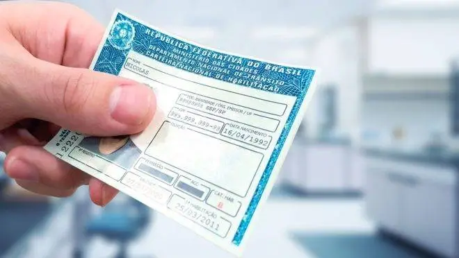
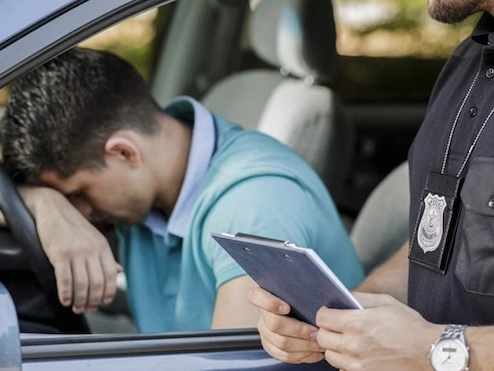
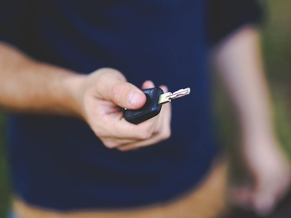

Se sua CNH foi suspensa, cassada ou bloqueada, estamos aqui para resolver o seu problema e
garantir uma solução o mais rápido possível.
RECUPERE SEU DIREITO DE DIRIGIR DE FORMA SIMPLES E RÁPIDA
Podemos te ajudar, mas você tem que agir rápido e não
perder mais tempo!

CNH Suspensa

CNH Cassada

CNH Bloqueada
×
CNH SUSPENSA
Conforme as novas regras de trânsito, em um período de 12 meses, o
condutor pode somar até 40 pontos na carteira. Se ele ultrapassar esse
número, terá a CNH suspensa. Entretanto, esse limite pode ser alterado
se o motorista cometer infração gravíssima
Se o motorista for pego dirigindo mesmo após a suspensão da
habilitação, pode ficar detido de seis meses a um ano. Além disso,
paga multa e tem a licença cassada.
A suspensão do direito de dirigir, é uma penalidade prevista no art.
256, inciso III, do Código de Trânsito Brasileiro (CTB). Isso acontece
quando o motorista não segue as regras estabelecidas por esse órgão.
Veja algumas infrações que poderá ensejar na suspensão do direito de
dirigir:
Dirigir alcoolizado;
Dirigir em velocidade a máxima em mais 50% do limite permitido;
Forçar a passagem entre veículos transitando em sentidos opostos;
Transportar na moto criança menor de 7 anos de idade;
Transpor bloqueio policial;
Dirigir moto com os faróis apagados;
Dirigir moto e/ou transportar na moto passageiro sem capacete;
Dirigir fazendo malabarismo ou manobra perigosa;
Participar de competições esportivas sem autorização da autoridade
de trânsito;
Dirigir ameaçando pedestres;
Disputar corrida (racha) e omitir socorro à vítima.
É POSSÍVEL DIRIGIR COM A CNH SUSPENSA?
Não, pois o motorista deve entregar a CNH suspensa ao DETRAN
(Departamento Estadual de Trânsito) ou a um CFC (Centro de Formação de
Condutores). Portanto, dirigir nessa situação é considerado infração
gravíssima, acarretando penalidade e outras consequências. Ele pode
ter a CNH cassada, ficar mais de dois anos sem dirigir e pagar multa.
Além disso, o condutor que tomar multa com a CNH suspensa, deve passar
por todos os processos necessários exigidos na primeira habilitação.
Ou seja, realizar os exames físicos e psicológicos, as aulas práticas
e teóricas e as provas.
POR QUANTO TEMPO A CNH FICA SUSPENSA?
Ao atingir o limite de pontos, seja ele qual for (40, 30 ou 20) a
habilitação entrará em um processo de suspensão. O período de
suspensão, nesse caso, irá variar de 6 meses a 1 ano e, no caso de
reincidência no período de 12 meses, de 8 meses a 2 anos. Ainda assim,
sera possivel reverter essa situação recorrendo da penalidade.
ENTÃO QUER DIZER QUE EU VOU FICAR IMPOSSIBILITADO DE DIRIGIR?
Não necessariamente. Podemos te ajudar a regularizar a sua CNH
suspensa para você voltar a dirigir, com discrição, agilidade e dentro
da lei.
×
CNH CASSADA
A cassação da CNH (Carteira Nacional de Habilitação) é uma das
penalidades mais severas do Código de Trânsito Brasileiro (CTB), pois
deixa o condutor sem dirigir por 2 anos e acarreta uma série de outros
transtornos.
CASSAÇÃO DA CNH: O QUE É E SUAS PENALIDADES?
A cassação está prevista como uma das penalidades possíveis para as
infrações de trânsito no art. 256 do CTB, nos incisos V e VI, tendo em
vista que pode ocorrer com a CNH e com a PPD (Permissão Para Dirigir).
Trata-se da perda da Carteira Nacional de Habilitação sem
possibilidade de refazê-la pelo período de 2 anos.
A HABILITAÇÃO PODE SER CASSADA SE O CONDUTOR
For pego dirigindo com a CNH suspensa. Reincidir nas infrações
previstas nos artigos 162, III, 163, 164, 165, 173, 174 e 175 no prazo
de 12 meses. For condenado judicialmente por delito de trânsito.
Além disso, ela acarreta multa, uma vez que é desencadeada por uma
infração, que tem valor variável entre R$ 293,47 e R$5.869,40
MOTIVOS PARA ENTRAR COM RECURSO CONTRA CNH CASSADA
O principal dos motivos é que você pode se defender e tentar cancelar
essa penalidade, visto que você possui direito à ampla defesa, de
acordo com o art. 5º, incisos LV e LIV da Constituição Federal.
O Código de Trânsito também prevê o direito à defesa nos processos de
suspensão do direito de dirigir e cassação da CNH no art. 265. Sendo
assim, por que não?
Se você ainda não se convenceu de que recorrer é uma boa ideia, vou
lhe dar 6 motivos bastante válidos para entrar com recurso contra a
cassação de sua carteira. Assim, você entenderá o quão importante é e
os benefícios de cancelar uma penalidade como essa
● 2 anos privado de dirigir
O prazo para você ficar sem dirigir na hipótese de ter a sua CNH
cassada é de 2 anos (730 dias). É um período muito longo e essa
liberdade vai lhe fazer falta.
● Gastos que a cassação acarreta
Em primeiro lugar, haverá uma multa a ser paga, uma vez que ela será
ocasionada, de modo geral, por uma infração cometida em reincidência.
Isso, por si só, pode levar a uma multa de até R$ 5.869,40, valor
bastante alto.
Em seguida, haverá os gastos para refazer a CNH, que giram em torno de
R$ 2 mil atualmente, na possibilidade de uma aprovação de primeira nos
exames teórico e prático.
Além disso, você precisa contar com o fato de que precisará se
locomover nesse período e, por isso, gastará dinheiro com ônibus,
metrôs, trens, táxis, Uber, ou qualquer outro meio. A conta final pode
acabar mais cara do que a do combustível mensal, sem contar o tempo a
mais que você levará para chegar aos lugares.
● Tempo perdido
Você se lembra de quanto tempo levou para realizar todo o processo de
habilitação, contando as aulas teóricas, aulas práticas, exames
físico, psicológico e provas?
Pois é, você teria de refazer todo esse caminho e há uma grande chance
de você não dispor de todo o tempo que isso levaria.
● 365 dias de PPD
A PPD é a Permissão Para Dirigir, também conhecida como “CNH
provisória”. Se você tiver sua habilitação cassada, terá de passar 2
anos sem carteira e mais 1 ano com a permissão.
● Você pode ir para a prisão
Se você decidir se aventurar e dirigir nesse período, ou mesmo se for
o único condutor disponível em uma situação de emergência, por
exemplo, você pode acabar preso por cometer um crime de trânsito.
● Adiar a penalidade
Em último caso, se você tiver seus recursos todos indeferidos, ao
menos você terá um tempo a mais em posse da sua CNH enquanto o
processo tramita.
Além disso, o período em que estiver recorrendo será tempo suficiente
para que você se planeje para pagar a multa pela infração cometida,
visto que não é necessário pagá-la enquanto o processo não chegar ao
fim.
não chegar ao fim. Entende, agora, as razões de eu acreditar que
recorrer seja o melhor caminho para quem recebeu um processo de
cassação da CNH?
Passos do recurso administrativo de CNH cassada
A defesa, em um processo administrativo de cassação da CNH, possui
três momentos: Defesa Prévia, recurso em 1ª instância e recurso em 2ª
instância.
Cada uma dessas fases possui suas particularidades e cada caso também,
o que vai determinar os argumentos a serem usados nos recursos.
O objetivo é cancelar a penalidade de cassação, mas, para isso, o foco
deve ser anular a infração aplicada, uma vez que ela é o que
desencadeia essa consequência.
As fases têm início com a chegada das notificações via
correspondência. Nelas, haverá um prazo fixo para envio do recurso e o
local ao qual ele deve ser enviado.
Se você enviou Defesa Prévia e, ainda assim, recebeu a Notificação de
Imposição de Penalidade, isso significa que sua primeira defesa foi
indeferida, ou seja, não foi aceita. Sendo assim, será necessário
recorrer na próxima instância.
Se ainda estiver com dúvidas e não quiser ingressar sozinho com seus
recursos para cancelar a penalidade de cassação, você pode entrar em
contato conosco, nossa equipe está preparada para lhe ajudar.
ENTÃO QUER DIZER QUE EU VOU FICAR IMPOSSIBILITADO DE DIRIGIR?
Não necessariamente. Podemos te ajudar a regularizar a sua CNH cassada
para você voltar a dirigir, com discrição, agilidade e dentro da lei.
×
CNH BLOQUEADA
A carteira de motorista bloqueada representa a suspensão temporária do
direito de dirigir de um indivíduo. Isso pode acontecer devido a
infrações no trânsito ou condições específicas que violam as normas
estabelecidas pelas autoridades e órgãos responsáveis pela
regulamentação da CNH.
Então, durante o período de bloqueio, o titular da CNH está proibido
de conduzir veículos automotores, sendo necessário aguardar até que as
condições ou infrações que levaram ao bloqueio sejam regularizadas.
Somente após a resolução adequada desses problemas, a CNH pode ser
reabilitada, restituindo o direito de dirigir ao condutor.
O QUE PODE RESULTAR NO BLOQUEIO DA CARTEIRA DE MOTORISTA?
O bloqueio da CNH pode ocorrer por diversas razões, sendo algumas
delas:
Acúmulo de pontos na carteira por infrações;
Infrações graves;
Envolvimento em acidentes com vítimas;
Cassação ou suspensão devido a reincidência;
Decisão judicial;
Fornecimento de endereço falso;
Falsa atribuição de infrações;
Suspeita de fraude na habilitação;
Transferência de CNH suspensa para outro estado;
Entre outros.
Existem também muitos relatos de clientes com a CNH Bloqueada, onde a
situação do bloqueio acontece em decorrência da mudança de endereço.
Há também casos de pessoas que sofreram multas na Permissão para
Dirigir, resultando no bloqueio da Habilitação e emissão do documento
definitivo ou que não cumpriram o prazo para renovar a CNH.
O QUE DEVO FAZER PARA DESBLOQUEAR MINHA CNH?
O mais indicado nessa situação é procurar especialistas que tornem
claro as medidas que se deve tomar em relação à CNH Bloqueada.
Podemos te ajudar a regularizar a sua CNH bloqueada para você voltar a
dirigir, com discrição, agilidade e dentro da lei.
SERVIÇOS
Nosso escritório é focado em recursos para suspensão, cassação e
bloqueio da CNH, pois acreditamos que, para garantir um serviço de
excelência, é preciso muita dedicação
A suspensão, cassação ou bloqueio da CNH é uma situação delicada
que pode causar grandes transtornos na vida do motorista. Por
isso, é fundamental contar com o apoio de uma equipe
especializada, que conheça profundamente a legislação de trânsito
e as melhores estratégias para reverter a situação.
Nosso escritório possui uma vasta experiência na área, e está
sempre atualizado sobre as últimas mudanças na legislação.
Ao nos contratar, você terá:
Uma análise criteriosa do seu caso;
A elaboração de um recurso personalizado, com argumentos sólidos
e fundamentados na legislação;
Chance maior de cancelamento da punição;
Manter a habilitação ativa enquanto recurso está sendo julgado;
E muito mais!
NÃO PERCA SEU DIREITO DE DIRIGIR!
Fale agora com um de nossos especialistas e vamos encontrar a melhor
solução para você!